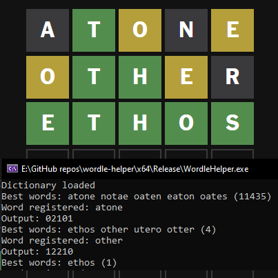
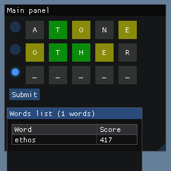

Wordle helper
Check the code on GitHub!Wordelper?
This is a small project that I worked on when Wordle became popular. It's an approach to efficiently find the correct answer to the game. Like most of my projects, it was done in C++.
Initially, I just did it using a basic cmd window. It was extremely simple. The settings were stored on a file in the main folder. In there you would select which language did you want to use and how many characters you wanted the words to be. To inform the program about the result of a word you would enter a number for each character in the word: 0 for an incorrect character (gray), 1 for a correct character in the wrong position (yellow), and 2 for a correct character in the correct position (green).
Over a year later, I found out about this project again and decided to improve its appearance. I implemented a complete UI using Dear ImGui by ocornut. Now, users have access to a scrollable list of many suitable words, along with a functional simulation of the game. You can simply type the selected word, click on the respective boxes to change their color, and submit it when you're done. The settings have also been moved to the UI, eliminating the need to open and edit files.
The premise is quite simple. First of all, we need a dictionary and letter frequencies for each language we want to be able to solve the Wordle game. Both of those can be found on the internet by doing some research. In the project, I provided both files for English, Spanish and Catalan. For simplicity, I multiplied all values from the letter frequencies by 10 and rounded them to avoid handling float values. Once this is set up, we can start with the game.
For each word that matches the length assigned in the settings, the program assigns it a score based on all the characters in the word using the letter frequencies. For example, in a basic Wordle game (English, 5 characters) the best opening word with this system is atone with a score of 442. This score is the sum of the letter frequency scores in English: a(82), t(91), o(75), n(67), e(127). The program shows the list of the 200 best words sorted for the user to choose from. Then, the user has to type the word they selected and its result. Based on that, the list of available words is updated, removing all the words with banned characters and characters in the wrong positions. After that, the process repeats until the Wordle game is completed.